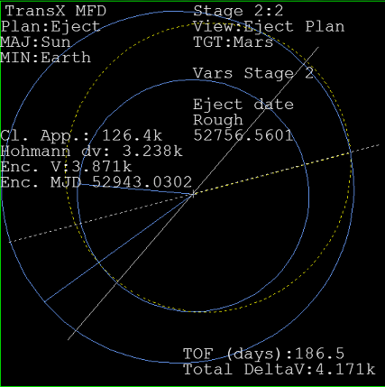
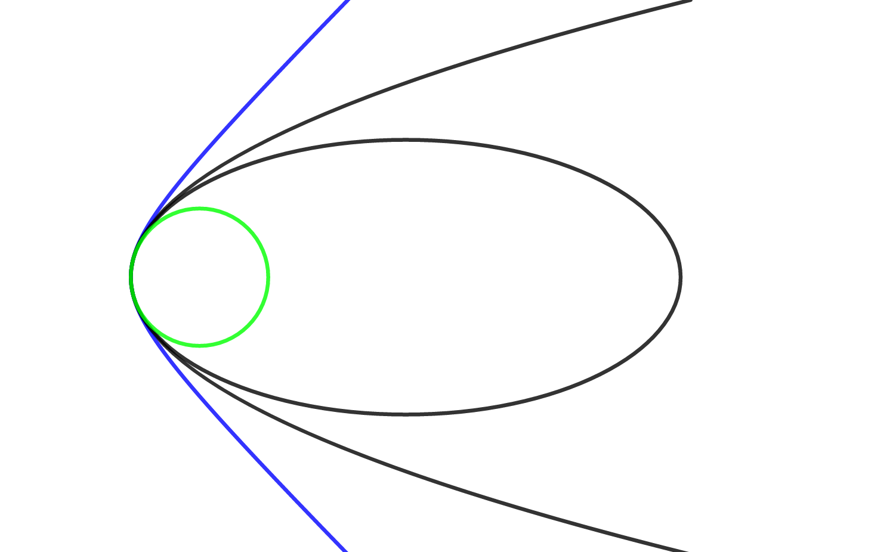
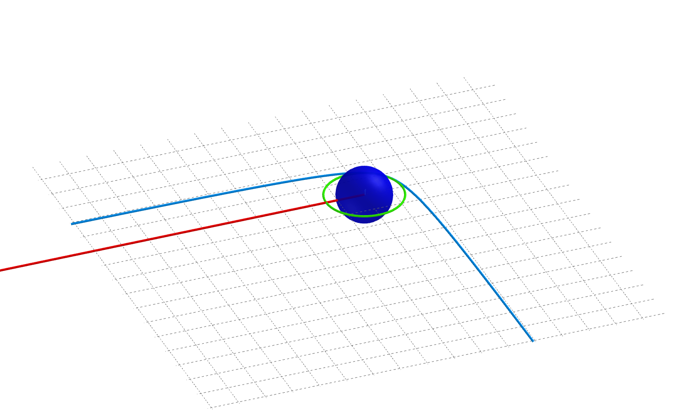
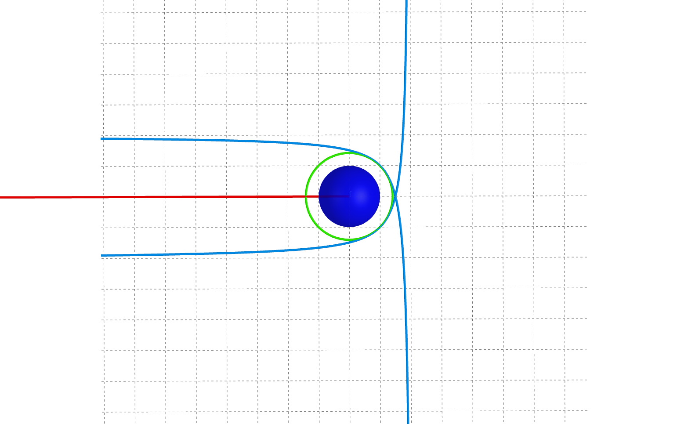
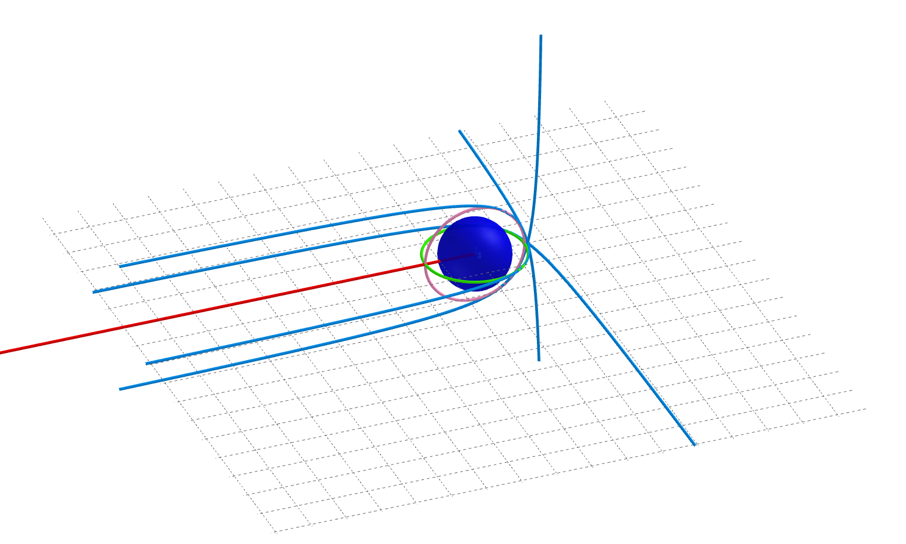
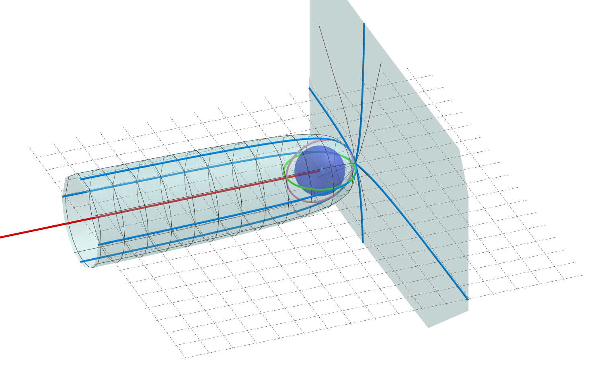
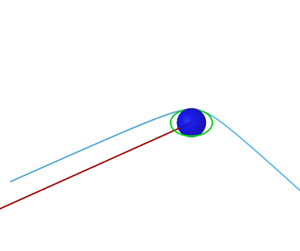

惑星間遷移軌道（ほかの惑星へと飛行するための軌道）への打ち上げについて詳しく解説します。
TransXのEscape Plan、IMFDのSurface Launchに関係する内容です。
打ち上げ作業に取りかかる前に、あらかじめ惑星間遷移軌道を作成しておきます。

Orbiterチュートリアル Part18
IMFD Part1 Target Interceptとフライトプランの作成
地上にある打ち上げ地点は、自転によって回転しつつ、地球とともに公転軌道を移動しています。
打ち上げ地点はこのように複雑な運動をしているので、いったんその存在を忘れて、地球を出発点として軌道を作成します。
「地球を宇宙船に見立てて考える」という人もいます。
地球と目的地の惑星の位置関係から、条件に合う遷移軌道を決定します。
この作業は、地球低軌道から月へと飛行する場合と基本的な考え方は同じです。
出発点を宇宙船にするか、地球そのものにするかという違いだけです。
円軌道のある一点で加速すると、円軌道→楕円軌道→放物線軌道→双曲線軌道へと変化します。
Orbiterでは、軌道上で実際にエンジンを噴射することで、軌道が変化する様子を確認できます。

以下の図において、赤い線はあらかじめ作成しておいた惑星間遷移軌道への方向を示しています。
緑の円は地球上を周回するパーキング軌道です。
パーキング軌道のある一点で加速すると、青で表示した双曲線へと変化します。

この双曲線軌道の片方の端は、赤い線と並行に伸びています。
このような双曲線軌道に乗ることができれば、そのまま遷移軌道に接続できます。
赤い線と青い双曲線はまったく同じではありませんが、惑星間航行の長大な距離に比べればこの違いはごく小さなものです。
パーキング軌道を逆回りに周回する場合を考慮に入れると、反対側にもうひとつ双曲線軌道を作成できます。

また、この宇宙は3次元空間なので、赤い線を軸に双曲線軌道を回転させることができます。
惑星の横からでも、上・下からでも、同じ方向へと飛んでいくことができます。

このように軌道を回転させることで、無限にたくさんの双曲線軌道を考えることができます。


これが意味するのは、地球上のどの地点であっても、その上空を通り、遷移軌道に接続できる双曲線軌道が必ず2つ※存在するということです。
TransXを使用する場合、Escape PlanのEj Orientation機能を使うことで、この軌道を目指して打ち上げることができます。
※パーキング軌道を逆回りに周回する場合を考えてください
真東に打ち上げた場合、地球の自転による速度をそのまま利用できます。
また、同じ方向への打ち上げであっても、時刻によって軌道の傾きと向きが変化します。
これは地球が自転しており、またその自転軸が傾いているからです。
これを応用して、真東に打ち上げたときの軌道が、ちょうど双曲線軌道のどれか1つと重なるようなタイミングを待って打ち上げると、もっとも効率がよくなります。
惑星間ミッションでは、このようにして打ち上げ時刻を決定します。